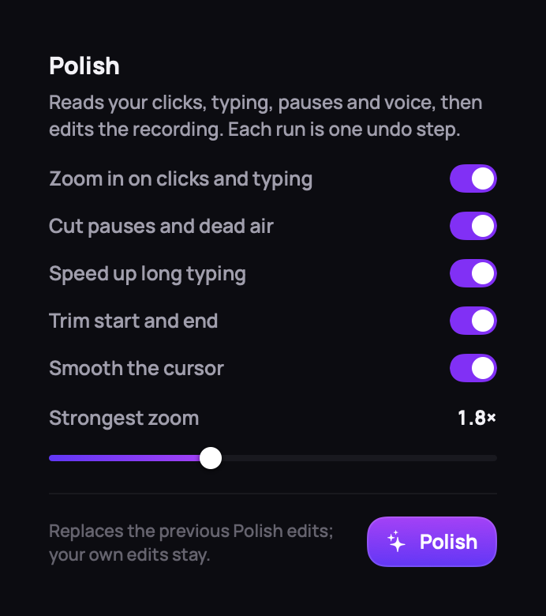
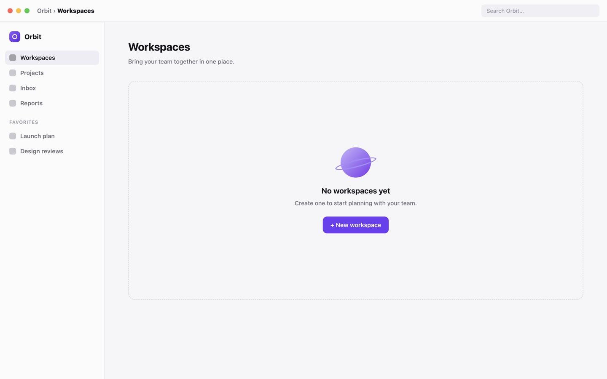
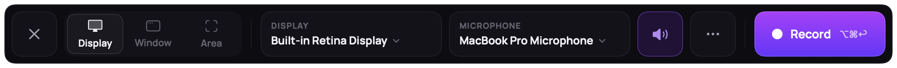
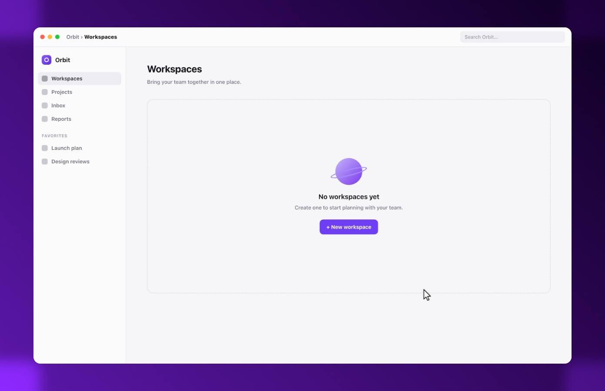
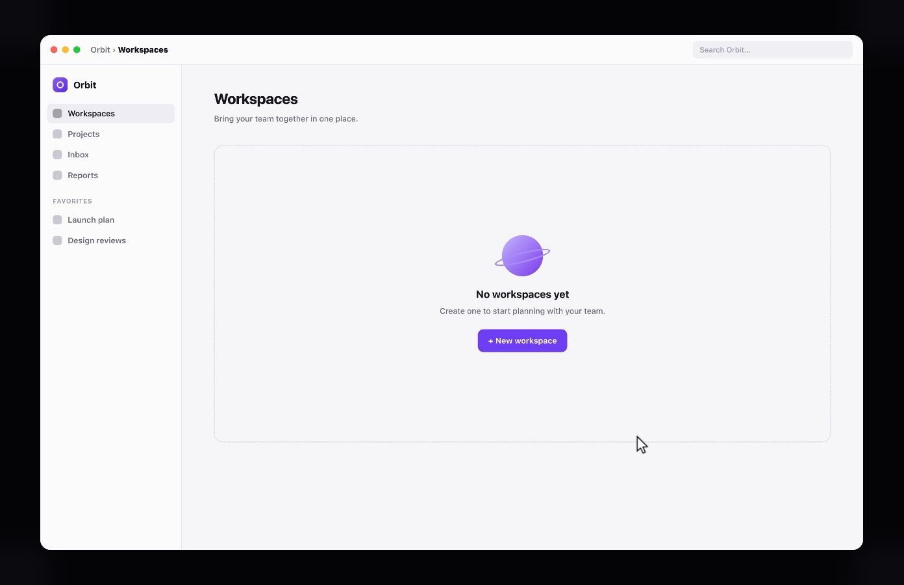
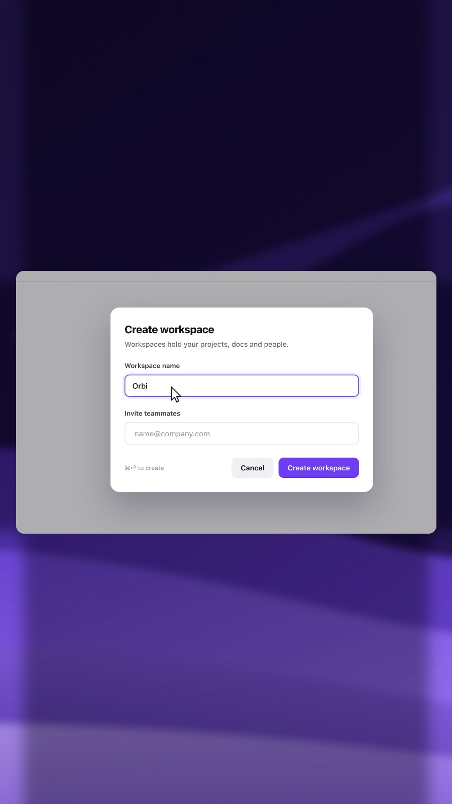

RecordPolishEditLookClaude
Polish. One click reads your clicks, typing and pauses, and does the edit.
C · STAGE — POLISH, STEP 1 (THE APP'S OWN POLISH BUTTON IS PRESSED)

Record. Press ⌥⌘↩ and pick a display, a window or an area.
C · STAGE — HERO / RECORD (STAGE STAYS PINNED)

Polish. One click reads your clicks, typing and pauses, and does the edit.
C · STAGE — POLISH, STEP 1 (THE APP'S OWN POLISH BUTTON IS PRESSED)
Polish. Every zoom and cut lands on the timeline as an edit you can change.
C · STAGE — POLISH, STEP 2 (THE RESULT PLAYS IN THE APP)



Look. Your real desktop by default, or a gradient, a colour, or 9:16.
C · STAGE — LOOK